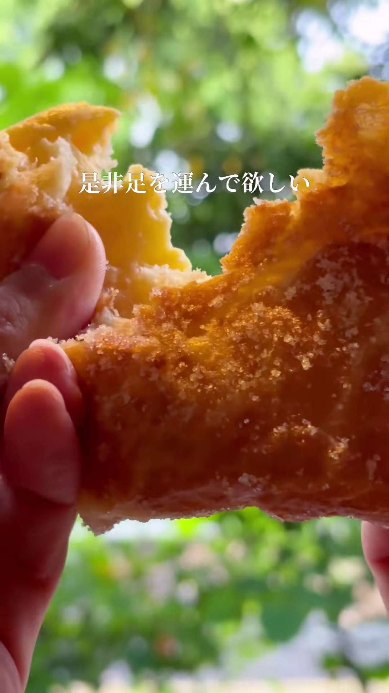

菓子屋Hanataba（ハナタバ）
熊本市東区健軍にある「生ドーナツ専門店」。オープン当初から連日行列ができるほどの人気を集めている。パティシエが作るケーキのような生ドーナツが特徴で、熊本県産の小麦粉やさつまいも、牛乳など地元の食材を多く使用。
基本情報:
- 住所: 熊本市東区健軍3丁目23-3 (健軍交番前駅から徒歩1分)
- 電話番号: 不明
- 営業時間: 10:00～13:00／15:00～18:00（※売り切れ次第終了）
- 駐車場: 不明
- 定休日: 木曜日 (不定休の場合あり、Instagramでの確認推奨)
ギャラリー

